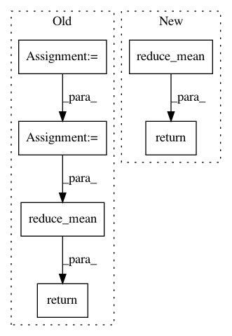

fe9ebeefe7593432d1df9cb2c8b7ffdc8ec1a38b,tensorlayer/cost.py,,cross_entropy,#Any#Any#,12
Before Change
The code is borrowed from: `here <https://en.wikipedia.org/wiki/Cross_entropy>`_.
with tf.name_scope("cross_entropy_loss"):
net_output_tf = output
target_tf = target
cross_entropy = tf.add(tf.mul(tf.log(net_output_tf, name=None),target_tf),
tf.mul(tf.log(1 - net_output_tf), (1 - target_tf)))
return -1 * tf.reduce_mean(tf.reduce_sum(cross_entropy, 1), name="cross_entropy_mean")
def mean_squared_error(output, target):
Return the cost function of Mean-squre-error of two distributions.
After Change
// cross_entropy = tf.add(tf.mul(tf.log(net_output_tf, name=None),target_tf),
// tf.mul(tf.log(1 - net_output_tf), (1 - target_tf)))
// return -1 * tf.reduce_mean(tf.reduce_sum(cross_entropy, 1), name="cross_entropy_mean")
return tf.reduce_mean(tf.nn.sparse_softmax_cross_entropy_with_logits(output, target))
def mean_squared_error(output, target):
Return the cost function of Mean-squre-error of two distributions.
In pattern: SUPERPATTERN
Frequency: 3
Non-data size: 6
Instances
Project Name: tensorlayer/tensorlayer
Commit Name: fe9ebeefe7593432d1df9cb2c8b7ffdc8ec1a38b
Time: 2016-08-23
Author: dhsig552@163.com
File Name: tensorlayer/cost.py
Class Name:
Method Name: cross_entropy
Project Name: tensorflow/cleverhans
Commit Name: a2b4632f2df6ba0aae75e4ad873aa995ba362566
Time: 2016-11-07
Author: goodfellow.ian@gmail.com
File Name: cleverhans/utils_tf.py
Class Name:
Method Name: tf_model_loss
Project Name: NifTK/NiftyNet
Commit Name: a0f77cc8b87512e691a7c22b6fb9ba60f603b632
Time: 2017-07-04
Author: r.gray@ucl.ac.uk
File Name: layer/reparameterization_trick.py
Class Name: ReparameterizationLayer
Method Name: layer_op